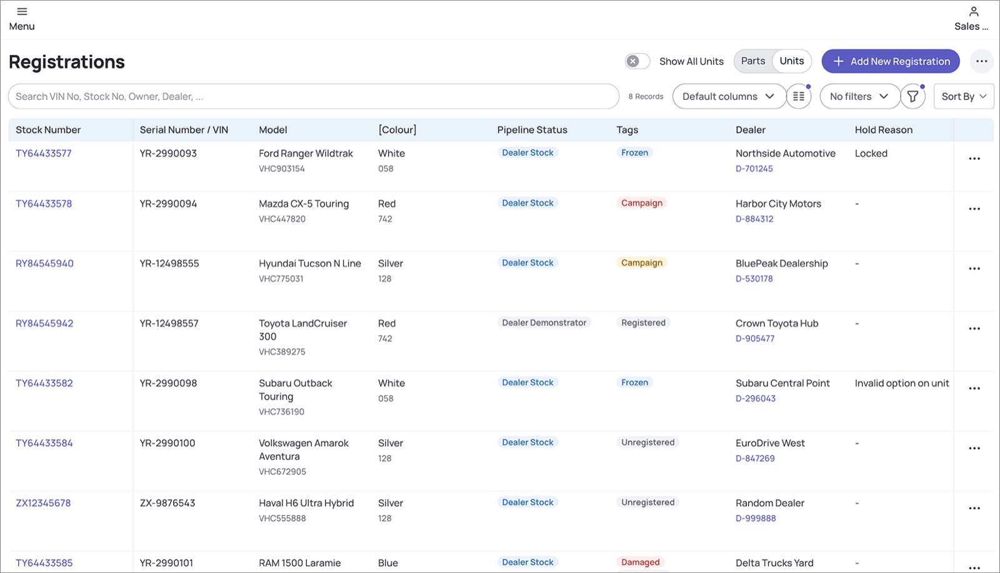
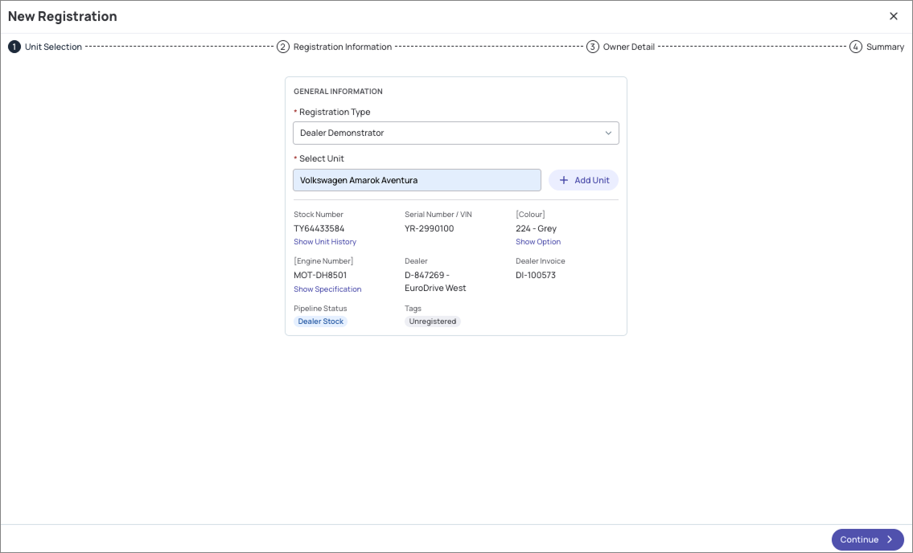
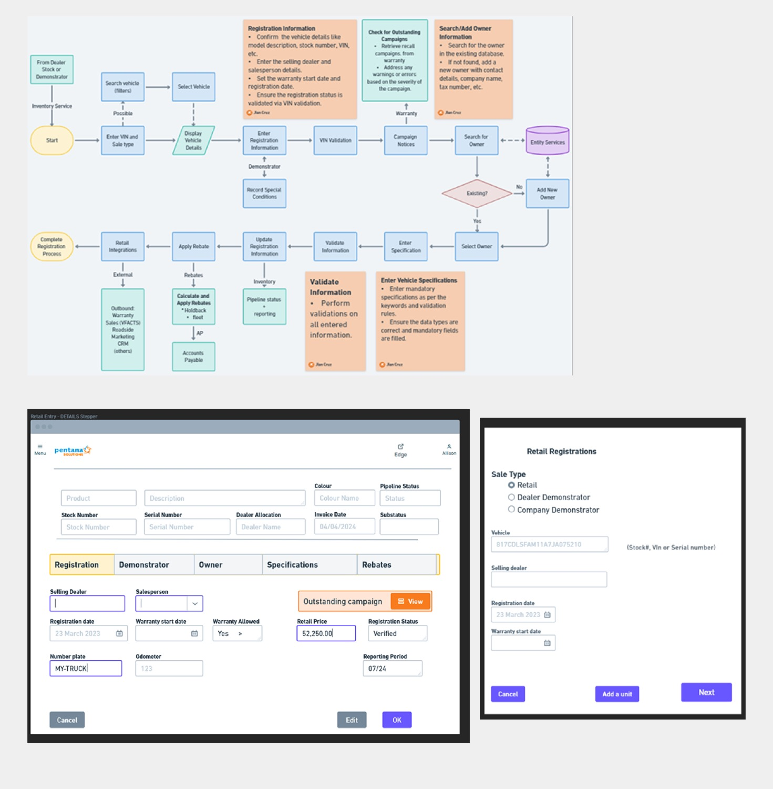
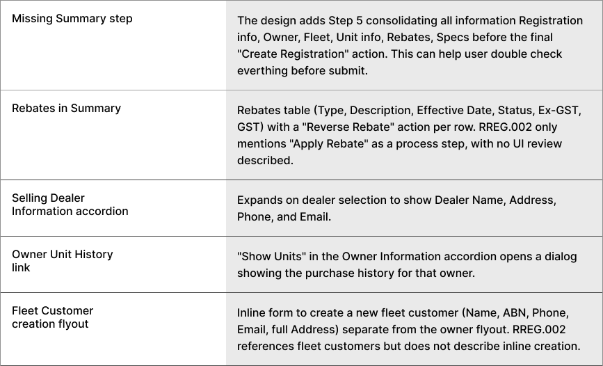
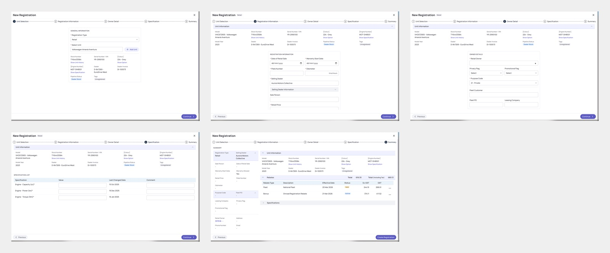
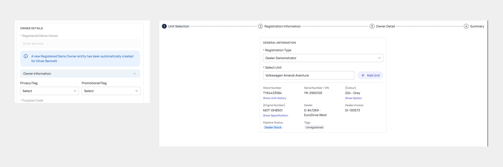

Enterprise SaaS · Adaptive Workflow UI
One role-aware flow for corporate and dealer registrations.
DistributorPower Registration connects automotive distributors with external dealer networks to register retail and demonstrator vehicles with accurate warranty dates, ownership, and campaign checks. I translated a dense PRD into a unified five-step adaptive stepper and centralized Registrations table built directly in HTML/Angular.

Handles Retail, Dealer Demonstrator, and Company Demonstrator without separate screens.
Specifications automatically hide for Demonstrator flows while fields auto-populate.
Enforces ownership-based data visibility natively inside shared UI components.
01 · Context
Connecting internal distributors and external dealers on one screen.
Vehicle registration sits at a high-stakes operational handoff inside DistributorPower: every recorded sale locks warranty start dates, campaign validations, rebates, and legal ownership records.
Pentana needed one shared registration capability serving both internal corporate users (full visibility) and external dealer users (strictly scoped to their own stock) without maintaining duplicate codebases.
DistributorPower Web
Corporate & Dealer Connect
Retail · Dealer Demo · Co. Demo
PRD Audit · UI · Angular HTML
02 · Problem
Fragmented workflows, late errors, and repetitive manual entry.
Registration staff processed high volumes of units under strict warranty and compliance rules, yet legacy processes worked against them.
Separate workflows per sale type
Retail, Dealer Demonstrator, and Company Demonstrator operated across disconnected processes, forcing users to memorize rules per transaction type.
Validation only on final submit
Critical checks including VIN eligibility, campaign blocks, and warranty date rules surfaced only after submission, forcing frustrating backtracking.
Excessive manual repetition
High-frequency demonstrator entries forced staff to re-enter obvious defaults such as dealer owner entity, purpose code, and warranty start date.
03 · My role
PRD detective work, stepper architecture, and Angular UI build.
PRD Gap Analysis
Dissected the Registration PRD to map conditional rules, role restrictions, and missing UI states before drawing high-fidelity screens.
Adaptive Stepper Design
Iterated with Pentana from a dense 3-step accordion concept to a crisp, low-cognitive-load 5-step wizard with persistent unit context.
List & Component Build
Crafted the Registrations table and stepper screens directly in HTML/Angular, maintaining visual parity across the DistributorPower suite.
04 · Approach
Map every PRD rule, surface hidden gaps, refine with client.
Enterprise forms fail when edge cases hide in text specs. Turning the PRD into visual flow diagrams revealed missing screen elements early enough to fix collaboratively with Pentana.
PRD Breakdown
Extracted all three registration types, ownership rules, and validation triggers.
Gap Identification
Flagged incomplete PRD behaviors and ecosystem pattern mismatches.
Flow Blueprint
Mapped conditional branching across Retail vs Demonstrator registrations.
Layout Trade-off
Tested 3-step accordions vs dedicated 5-step progression with Pentana.
Smart Defaults
Defined auto-populated dealer, owner, and warranty fields from Step 1 unit data.
UI & HTML Build
Delivered both Create New Registration wizard and Registration List views.


05 · Adaptive 5-Step Flow & Role Visibility
Making complex branching feel effortless.
Instead of forcing users to decode which fields apply to their sale type, the stepper adapts dynamically the moment a user picks Registration Type and Unit in Step 1. A pinned Unit Information bar remains visible across Steps 2 to 5 so staff never lose track of the VIN or stock number they are editing.
| Registration Type | Step 4 (Specifications) | Intelligent Field Defaulting |
|---|---|---|
| Retail Sale | Visible and required (Engine capacity, power, torque specs). | Auto-fills Selling Dealer and Unit metadata from Step 1; exposes Retail Owner, Fleet PO, and Leasing fields. |
| Dealer Demonstrator | Automatically skipped to shorten flow. | Auto-populates Selling Dealer as Registered Demo Owner, Purpose Code, and default Warranty Start Date. |
| Company Demonstrator | Automatically skipped to shorten flow. | Applies internal corporate ownership context and role-gated fields automatically. |

06 · Key solutions
Structured progression backed by high-density clarity.
1. Dedicated 5-step stepper with persistent unit summary.
An early concept compressed the first three sections into one accordion step to minimize clicks. Together with Pentana, we found that stacking too many compliance fields on one screen increased error risk.
The final five-step horizontal stepper (Unit Selection, Registration Information, Owner Detail, Specification, Summary) gives staff unmistakable progress, inline validation before advancing, and a final Summary review combining Unit Information, Rebates totals (Ex-GST and GST), and Specifications.

2. Conditional steps and auto-population that cut repetitive typing.
Selecting a Demonstrator type automatically bypasses Step 4 (Specifications) and pre-fills predictable fields including Selling Dealer and Registered Demo Owner straight from the unit chosen in Step 1.
Combined with early inline validation on VIN eligibility and warranty rules, staff fix issues immediately in context rather than restarting from scratch.

3. Centralized Registrations workbench for daily management.
Alongside creation, the Registrations List provides a crisp operational hub featuring VIN/Stock/Dealer search, a Parts/Units segmented control, saved Column and Filter pickers, and color-coded status pills (Dealer Stock, Frozen, Campaign, Registered, Unregistered, Damaged).
Every visual token stays aligned with Pentana Reporting so users moving between DistributorPower modules face zero relearning.
07 · Trade-offs
Clarity over artificial click-count reduction.
Our first draft tried capping the flow at 3 steps using accordions. Moving to 5 focused steps slightly increased step clicks, yet markedly lowered cognitive overload and matched dealer mental models.
Auto-filling Selling Dealer and Demo Owner eliminated repetitive typing while keeping fields editable so exceptions never hit a dead end.
Enforcing ownership rules inside shared components required careful state mapping upfront, saving Pentana from maintaining two divergent products.
08 · Outcome
Strong client approval across both wizard and workbench.
- Delivered both the adaptive 5-step Create New Registration flow and the centralized Registrations List with strong stakeholder satisfaction from Pentana.
- Worked directly with Pentana in peer-to-peer collaboration across multiple DistributorPower modules, balancing UI design, design system governance, PRD research, and front-end build.
- Established repeatable stepper, inline validation, and table patterns reused across the broader automotive distributor platform.
Completed in direct collaboration with Pentana Solutions and BA Matthew as part of the DistributorPower suite.
09 · Reflection
What I learned.
Fewer steps are not always faster.
Cramming dense compliance data into fewer screens creates cognitive friction; clean progressive disclosure lets experienced operators move faster with fewer mistakes.
PRDs are a starting point, not the finished UX.
Drawing every state visually uncovered edge cases and missing fields that text specifications naturally gloss over.
Shared system fluency multiplies impact.
Owning UI, design system tokens, and Angular markup together meant design intent survived intact all the way into production.
Zonie: From solo idea to a 108-file native iOS app built with AI.